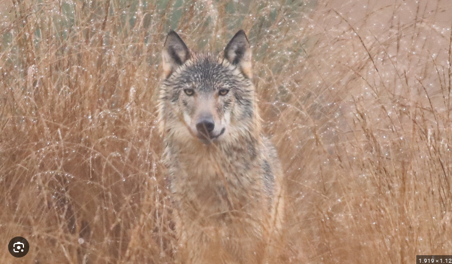

Onderzoek de terugkeer van de Wolf op de Veluwe.

Bekijk de video om een goed beeld te krijgen van de situatie in Ede.
Voordat we dieper in de bronnen duiken, delen we onze huidige kennis. Wat weet jij al?
Natuur: Wolven zijn erg schuw en komen liever geen mensen tegen.
Verhaal: Roodkapje en de boze wolf.
Natuur: Ze kunnen enorme afstanden afleggen op één dag.
Verhaal: De wolf en de zeven geitjes.
Beste deskundigen,
Jullie gaan onderzoeken hoe de wolf weer een plek kan krijgen op de Veluwe. Het is jullie taak om een mindmap te maken waarin de verschillende belangen duidelijk naar voren komen.
Gebruik de infobronnen en video's om argumenten te verzamelen voor de volgende drie punten:
Klik op de knoppen om jullie verzamelde argumenten toe te voegen aan de centrale mindmap.
Een goede deskundige kijkt ook kritisch naar het werk van anderen. We gebruiken een positieve benadering: geef elk groepje een 'Top'.
| Criterium | Waar let je op? (Pedagogische insteek) |
|---|---|
| Inhoud | Is de tekst uit de krant en de video's goed gebruikt voor de argumenten? |
| Balans | Zijn zowel de voorstanders als de tegenstanders op een eerlijke manier benoemd? |
| Samenwerking | Ziet het resultaat eruit alsof er goed is overlegd in het groepje? |
Je hebt het onderzoek naar de wolf op de Veluwe succesvol afgerond. Je bent nu een ware expert op het gebied van ecologie en maatschappelijke belangen.